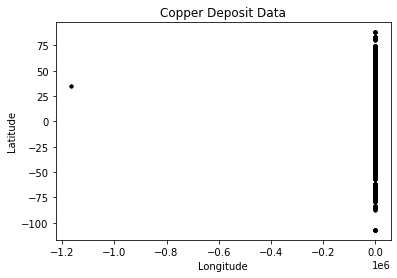
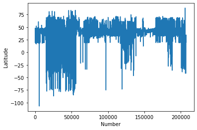
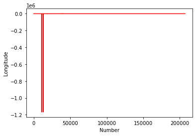
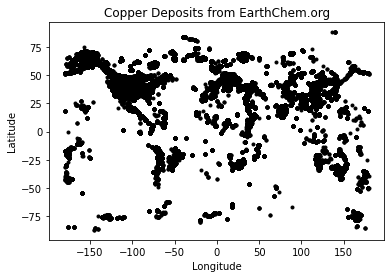
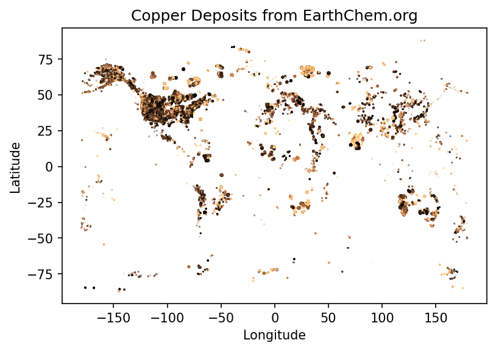
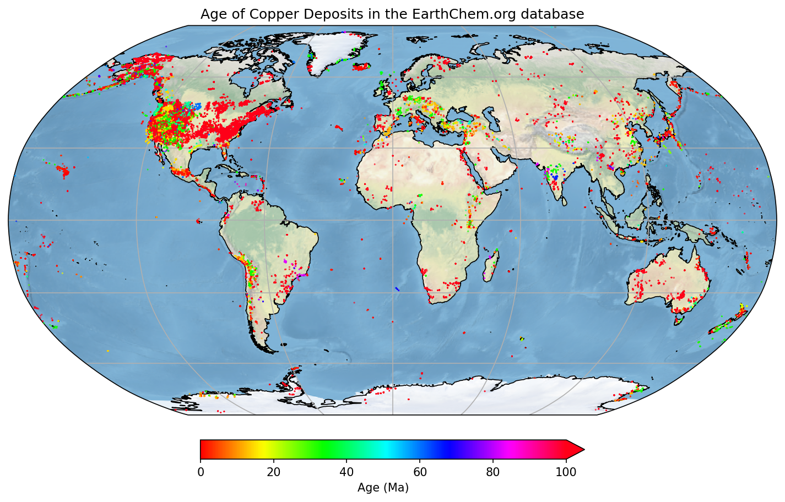

2+4*1042Generally, cells like this are what to type into your Python shell/notebook/colab:
Cells like the above are the expected output.
Look at that, your first Python code! Who knew Python is just a big ol’ calculator! But it can do so much more…
Note: A variable (e.g. timeStart) must start with a letter or underscore, and can include a number
#Now you can use that variable in different ways.... firstly print it out to the screen
print("The age of the sample is", timeStart, " Million years")The age of the sample is 145 Million yearsNothing printed out above? Good. Jupyter Notebooks won’t always do that so let’s tell Python to print it.
#Make a new 'string' variable
geological_age='Jurassic'
#Print out some useful information that includes our different variables
print("My sample is ", endtime, " Million years old, from the", geological_age, " age.")My sample is 201 Million years old, from the Jurassic age.#Make a Python List object, similar to an array.
times=[1,4.5,5+3.2,geological_age,"Another string",True]
print(times)
#There are many different types of data types and objects:
#int, long, float, complex, NaN, logical, String, Lists, Tuple, Dictionary, functions, classes, etc[1, 4.5, 8.2, 'Jurassic', 'Another string', True]These are bits of code you want to perhaps use many times, or keep self contained, or refer to at different points. They can take values as input and give values back (or not).
Note the indentation - Python forces your code to be nicely readable by using ‘whitespace’/indentation to signify what chunks of code are related. You will see this more later, but generally you should try and write readable code and follow style standards
Many functions have a header - formatted as a multiline comment with three ’’’. This hopefully will tell you about the function
Anyway, let’s run our function, now that we have initialised it!
Write a function to convert map scale. For example, on a 1:25,000 map (good for hiking!) the distance between two points is 15 cm. How far apart are these in real life? (3750 m).
[Reminder: 15 cm * 25000 = 375000 cm = 3750 m]
Your function should take as input two numbers: the distance on the map (in cm) and the second number of the scale and, i.e. calculate_distance(15, 25000) should return 375000
Python is great for doing something a million times. It can be useful if you have many samples/data points and you want to operate or manipulate those points.
1
4.5
8.2
Jurassic
Another string
TrueSometimes you need to loop through a list, but simultaneously keep track of which index you’re up to.
for myindex, mything in enumerate(times):
print("index:",myindex," The thing in my 'times' list:",mything)index: 0 The thing in my 'times' list: 1
index: 1 The thing in my 'times' list: 4.5
index: 2 The thing in my 'times' list: 8.2
index: 3 The thing in my 'times' list: Jurassic
index: 4 The thing in my 'times' list: Another string
index: 5 The thing in my 'times' list: TrueYou don’t always need a pre-defined list
age=140
# What is the value of "timeStart" ?
# age < timeStart is a "logical" data-type. It's either True or False
while age < timeStart:
print("time:", timeStart, " age:", age, " difference:",timeStart-age)
#Increment the age variable
age=age+1time: 145 age: 140 difference: 5
time: 145 age: 141 difference: 4
time: 145 age: 142 difference: 3
time: 145 age: 143 difference: 2
time: 145 age: 144 difference: 1Control statements include the functions if, for, while, try.
if timeStart <= 200:
print(geological_age)
elif timeStart > 200:
print("Triassic age")
else:
pass #This option is not necessarily needed, but can be useful in some scenariosJurassic#Another function
def timescale(t):
print(t)
if (t <= 4500) & (t > 2500):
return("Archean")
elif (t <=2500) & (t > 541):
return("Proterozoic")
elif (t <= 541) & (t > 252):
return("Palaeozoic")
elif (t <=252) & (t > 65):
return("Mesozoic")
elif (t <=65) & (t >= 0):
return("Cenozoic")
else:
print ("Expect number between 0 and 4500, got:",t)
return(float('nan'))
timescale(1)1'Cenozoic'That is the basics. Now we are going to load in some data and manipulate it.
#First we have to load some modules to do the work for us.
#Modules are packages people have written so we do not have to re-invent everything!
#The first is NUMerical PYthon. A very popular matrix, math, array and data manipulation library.
import numpy
#This is a library for making figures (originally based off Matlab plotting routines)
#We use the alias 'plt' because we don't want to type out the whole name every time we reference it!
import matplotlib.pyplot as plt #Set the variable name for the file we are loading in.
#It is in the 'data' directory, and the file is called EarthChemCU.txt.
#We are currently working in /notebooks.
filename = '../data/EarthChemCU.txt'
#Now read in the data
# loadtxt() is a function that we can now use because we loaded the library called numpy
chemdata=numpy.loadtxt(filename, delimiter=',')
#chemdata <- the name of a variable we are making that will hold the table of data
#filename <- this is the name of the variable we declared above
#delimiter <- this is a csv fileOr really, search the function! Online documentation and discussion boards are filled with great content.
It is often a good idea to look at the data to have some idea of what you are working with
[[ 3.92583e+01 -1.14992e+02 1.11000e+02 1.96000e+04]
[ 3.92583e+01 -1.14992e+02 1.11000e+02 1.57000e+04]
[ 4.12060e+01 -1.17272e+02 1.05000e+02 3.00000e+00]
...
[ 2.00530e+01 1.17419e+02 0.00000e+00 3.00000e+01]
[ 2.00530e+01 1.17419e+02 0.00000e+00 3.30000e+01]
[ 2.00530e+01 1.17419e+02 0.00000e+00 3.50000e+01]]This data is in the style: Latitude (degrees), Longitude (degrees -180:180), Age (Ma), Copper abundance (ppm)
207431 rows!
chemdata is a table of data: an array with two dimensions. So to access/look at/change parts of it, we need to specify both row and column
Print the second and third columns for row 20-30.
#The indexing counts from [start:end]
#where "start" is included and "end" is excluded!
#Assuming we want row 30, then you need to
#include index 29 (i.e. set the end index to 30!)
#Same with columns, we want column 2 (index 1) and
#column 3 (index 2) so make our slice 1:3
print(chemdata[19:30,1:3])Now to make our first plot!
#Plot the lats and lons, i.e. the first column vs the second column
plt.plot(chemdata[:,1],chemdata[:,0],'k.')
plt.title('Copper Deposit Data')
plt.ylabel('Latitude')
plt.xlabel('Longitude')
plt.show()
This does not look right… It is a messy dataset! This is not uncommon. Maybe the Lats/Lons are stored as Norhtings/Eastings for some samples? Maybe they are missing a decimal place?
Anyway, Python is a great tool to clean things up! Let’s investigate further.
#Plot the Latitudes
plt.plot(chemdata[:,0])
plt.ylabel('Latitude')
plt.xlabel('Number')
plt.show()
#Plot the Longitudes
plt.plot(chemdata[:,1],'r')
plt.ylabel('Longitude')
plt.xlabel('Number')
plt.show()

This kind of casual data interrogation is a really handy way to exploring your data. There are definitely some outliers with latitudes and longitudes. There are quite a few ways clean the data, but let’s simply restrict our data range to -180:180 and -90:90.
#Clean up the data, remove anything outside lat lon extent
#Find all the "chemdata" column 1 (i.e. longitude) data points that are greater than -180, save it in a new variable
#Using a succinct method in two lines
datamask = ((chemdata[:,0] < 90)
& (chemdata[:,0] > -90)
& (chemdata[:,1] < 180)
& (chemdata[:,1] > -180))
cudata4 = chemdata[datamask]plt.plot(cudata4[:,1],cudata4[:,0],'k.')
plt.title('Copper Deposits from EarthChem.org')
plt.ylabel('Latitude')
plt.xlabel('Longitude')
plt.show()
Now make a more informative plot:
#Set reasonable variable names
lats=cudata4[:,0]
longs=cudata4[:,1]
age=cudata4[:,2]
copper=cudata4[:,3]
#lats_rich=lats[copper>2]
fig = plt.figure(figsize=(6,4),dpi=150)
#Restrict the colour range between 0 and 100 (ppm?)
plt.scatter(longs,lats,s=age/1000,c=copper,vmin=0, vmax=100,cmap=plt.cm.copper)
plt.title('Copper Deposits from EarthChem.org')
plt.ylabel('Latitude')
plt.xlabel('Longitude')
plt.show()
#You could come up with a more intelligent way to reject your outliers, e.g.
import numpy as np
def reject_outliers(data):
m = 2
u = np.mean(data)
print("mean is:", u)
s = np.std(data)
print("std is:", s)
filtered = [e for e in data if (u - 2 * s < e < u + 2 * s)]
print("removed:",np.shape(data)[0] - np.shape(filtered)[0])
return(filtered)
filtered_age=reject_outliers(copper)mean is: 408.55060226439844
std is: 6032.1541529827555
removed: 1163Just plotting the Cu content implies that better filtering could be applied (a homework exercise perhaps). Remember this is a pretty messy dataset, some Cu is reported as ppm, ppb, or %!
#Import another module called Cartopy - great for plotting things on globes
import cartopy.crs as ccrs
#Make new variables from our array (so it is easier to see what we are doing)
lats=cudata4[:,0]
longs=cudata4[:,1]
age=cudata4[:,2]
#######
## Make the figure
#######
#Create a figure object
fig = plt.figure(figsize=(12,8),dpi=150)
#Make a map projection to plot on.
ax = plt.axes(projection=ccrs.Robinson())
#Add some Earth-specific details (from the cartopy package)
ax.set_global()
ax.coastlines('50m', linewidth=0.8)
ax.stock_img()
ax.gridlines()
#Make a scatter plot of the data coloured by age.
#Restrict the colour range between 0 and 100 (Ma)
#And also set the scatter plot as a variable 'mapscat' so we can reference it later
mapscat=ax.scatter(longs,lats,marker=".",s=0.5,c=age,vmin=0,vmax=100,transform=ccrs.PlateCarree(),zorder=4,cmap=plt.cm.hsv)
#Make a Colorbar
cbar=plt.colorbar(mapscat, ax=ax, orientation="horizontal", pad=0.05, fraction=0.15, shrink=0.5,extend='max')
cbar.set_label('Age (Ma)')
# Add a map title, and tell the figure to appear on screen
plt.title('Age of Copper Deposits in the EarthChem.org database')
plt.show()
You can explore the different color maps at https://matplotlib.org/3.1.0/tutorials/colors/colormaps.html.
#We only need numpy and plotting libraries
import numpy
import matplotlib.pyplot as plt
import cartopy.crs as ccrs
#Set the correct filename/filepath to where you have downloaded the data
filename = '../data/EarthChemAG.txt'
#Add the "skiprows" flag, because this data has a header row
chemdata=numpy.loadtxt(filename, delimiter=',',skiprows=1)
#Set some variable names
lats=chemdata[:,0]
longs=chemdata[:,1]
age=chemdata[:,3]
silver=chemdata[:,2]
#Do a quick plot
plt.plot(longs,lats,'b.')
#This set actually looks fine, no filtering necessary!
#Just make the final plot again, with a new color bar
plt.scatter(longs,lats,s=age/10,c=silver,vmin=0, vmax=1000,cmap=plt.cm.twilight)
plt.title('Silver Deposits from EarthChem.org')
plt.ylabel('Latitude')
plt.xlabel('Longitude')
plt.show()